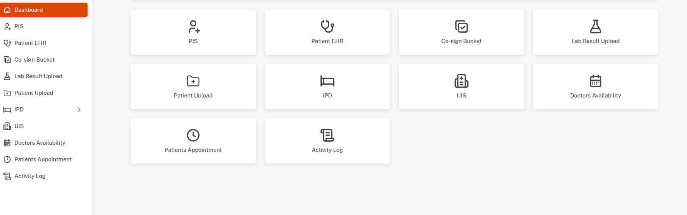
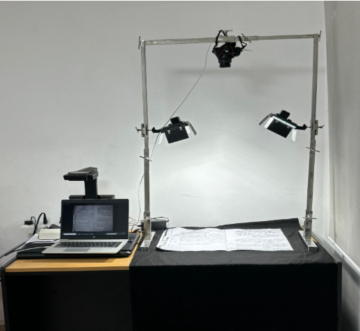
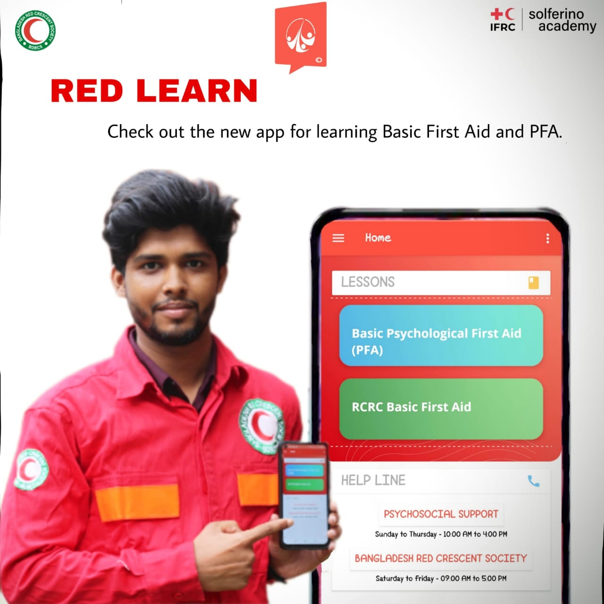
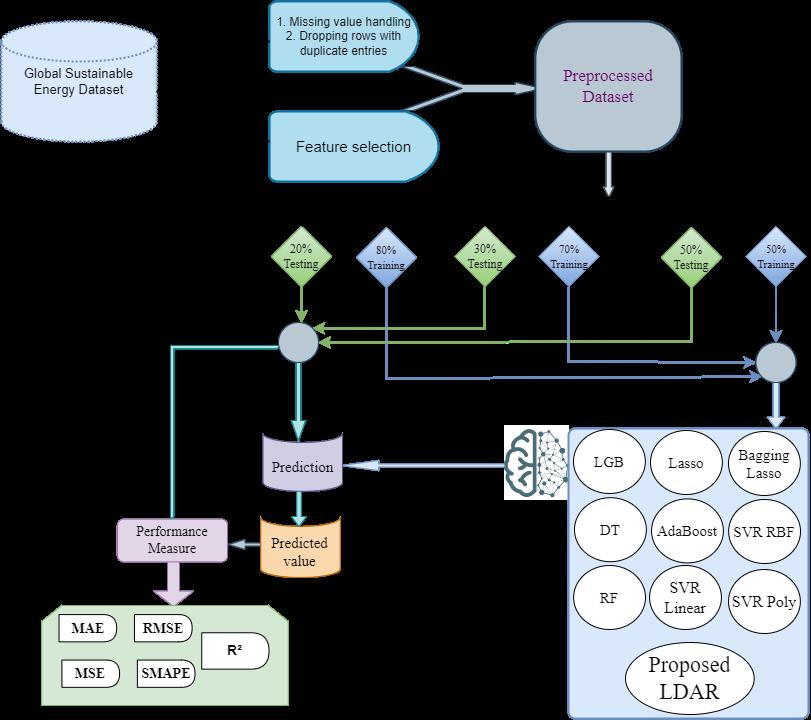
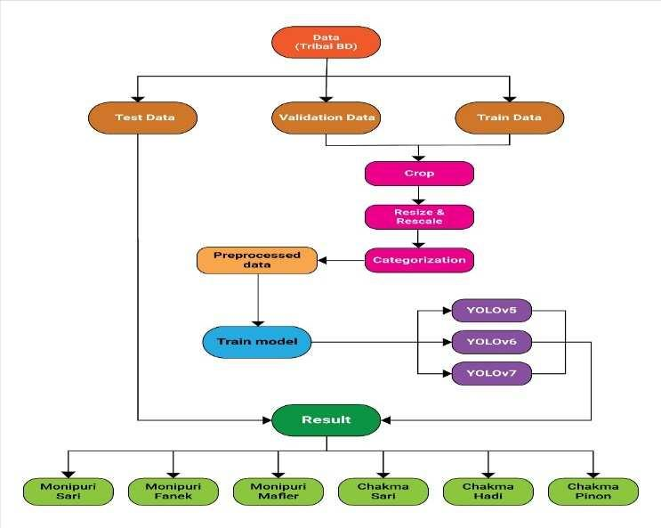

Tuhin Chowdhury
Software Engineer | AI/ML Enthusiast
Email : tuhin.sec@gmail.com
I'm a Software Engineer with over 3.5 years of experience in the industry. My motivation for coding and software engineering comes from solving day-to-day life problems and tackling industry-level challenges. I primarily work with backend services, system design and architecture, especially using Java and the Spring Boot framework. Over the years, I've gained experience across multiple project stacks, including desktop applications using .NET, mobile app development, and currently AI agents, MCP tools, and automation (n8n).
I am currently working as a backend software engineer at Golden Harvest Infotech Limited (CMMI Level 3, part of the 4 thousand employee Golden Harvest Group and its sister concern of: Golden Harvest), contributing to their software development team. Previously, I worked at Rokkhi IT Limited, a startup founded by BUET alumni, where I helped solve real-world building management problems.
Beyond technology, I am a passionate street photographer, with participation in national and international exhibitions and multiple awards. I also enjoy painting and writing. You can view my photography on Flickr.
Education
I completed my B.Sc. in Computer Science and Engineering from Sylhet Engineering College, an affiliated engineering institute of Shahjalal University of Science and Technology.
Motivation and Strength
My motivation for coding and software engineering comes from solving day-to-day life problems and tackling industry-level challenges. Working under pressure and on multiple projects over time has increased my patience and refined my approach to complex problem solving.
I thrive in challenging environments and enjoy breaking down complex problems into manageable solutions. My experience across different technology stacks has given me the flexibility to adapt quickly to new technologies and project requirements.
Research Interest
I'm exploring different areas in AI and Machine Learning because I enjoy building things, testing ideas, and improving how systems work. Some areas I'm focusing on are:
- Software systems and security
- Agentic AI and RAG-based work
- Federated learning for safer, shared systems
- Computer vision
- Machine learning in healthcare
Professional Projects
AI-Driven Hospital Management System (RAG Agent)

- Designed the Patient Registration System architecture for 100+ simultaneous registrations and integrated OCR to auto-fetch data from driver's licenses and passports, eliminating manual entry.
- Built and maintained Spring Boot microservices for EHR and IPD modules supporting 1,000+ concurrent hospital staff, ensuring transactional integrity and stable workflows.
- Developed an AI-powered chat interface for doctors to access appointments and patient data in real time.
- Designed Patient History management and maintained an ELK logging system for monitoring, error tracking, and observability.
- Implemented an AI agent–based auto-appointment booking system and RAG-based AI data retrieval, reducing scheduling conflicts and staff workload by 50%.
Church Census Records Archiving Project (High-Throughput Imaging)

- Engineered the full hardware ecosystem for a high-throughput DSLR imaging system using C#, .NET 8, and Nikon SDK, capturing 1,000+ images per hour with real-time spatial analysis and line-segment validation.
- Built a portable, offline-ready imaging solution worth 0.5 million BDT for R&D, serving a US-based company focused on family ancestry research.
- Led the backend team of the desktop application, integrating real-time image processing workflows while preserving visual aesthetics for millions of pages of historical books and documents.
- Developed a bulk image sharing pipeline maintaining image quality and producing data-entry-ready outputs, enabling faster digitization and collaboration.
- Solved challenges in real-time customized image capturing and storage management, ensuring efficient image handling and minimal post-processing.
Satellite Frequency Renting and Auto Billing System
- Developed a Spring Boot–based automated billing system for the Bangladesh Satellite Corporation, fully automating the billing workflow.
- Eliminated 100% dependency on Excel sheets and manual reporting by automating 10+ reports with JasperReports.
- Implemented automatic client emailing and payment alert services for clients using satellite frequencies.
- Delivered end-to-end automation, significantly reducing manual work across billing, reporting, and client notifications.
Red Learn App (A product of Bangladesh Red Crescent Society)

- Worked on native Android development using Kotlin, Jetpack Compose, and dependency injection for the Redlearn app, designing an online training and exam system.
- Integrated certificate generation, progress tracking, and analytics using a relational database system, reducing offline training costs by over 40%.
- Enabled 1,000+ trainings through the app, optimized for smooth performance, scalability, and offline usability across devices.
Publications
Book Chapter
BLDAR: A Blending Ensemble Learning Approach for Primary Energy Consumption Analysis
Book: Machine Learning Technologies on Energy Economics and Finance
Publisher: Springer
Implemented BLDAR, a novel blended ensemble model achieving a state-of-the-art 90% R² score.

Conference Paper
An Automatic System for Identifying and Categorizing Tribal Clothing Based on Convolutional Neural Networks
Conference: International Conference on Emerging Research in Electronics, Computer Science and Technology (ICERECT)
Publisher: IEEE
Developed a CNN-based system achieving 89.97% accuracy with YOLOv5.
